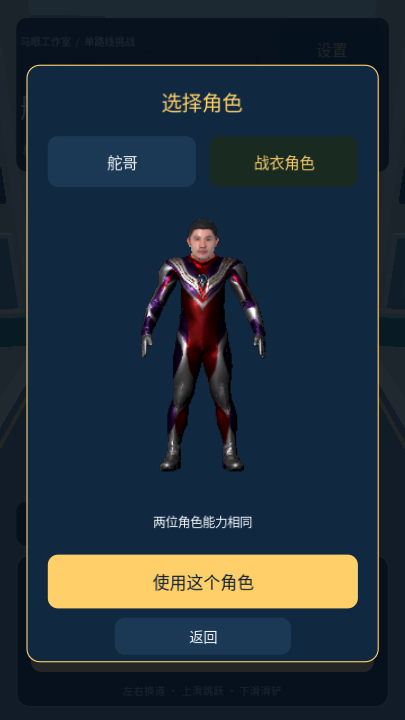

舵哥快跑 0.1.7 双角色测试
新增“舵哥”和“战衣角色”选择，可查看 3D 预览并记住选择；移除常驻金色脚下光环。保留原有玩法、角色能力及校园配色。
Android 10 及以上 · ARM64 · 0.1.7-dev
已装“舵哥快跑（新版）”0.1.5 或 0.1.6：直接安装更新即可，保留新版中的纪录。仅装原版 0.1.4：此包作为独立应用安装，旧游戏与旧纪录保留，新版不会自动导入旧纪录，无需卸载。
安装后，在开始界面点击“角色”，选择“战衣角色”，再点击“使用这个角色”。请试试跑、跳、滑铲，退出重开确认选择仍被保留；也可切回舵哥，查看脚下常驻金色光环已去掉。磁铁拾取后的短暂提示效果仍保留。

当前为双角色测试包；官网默认下载和游戏内在线更新暂保留已验收的 0.1.6，手机确认正常后再切换。
62,080,826 字节 · SHA-256 校验文件